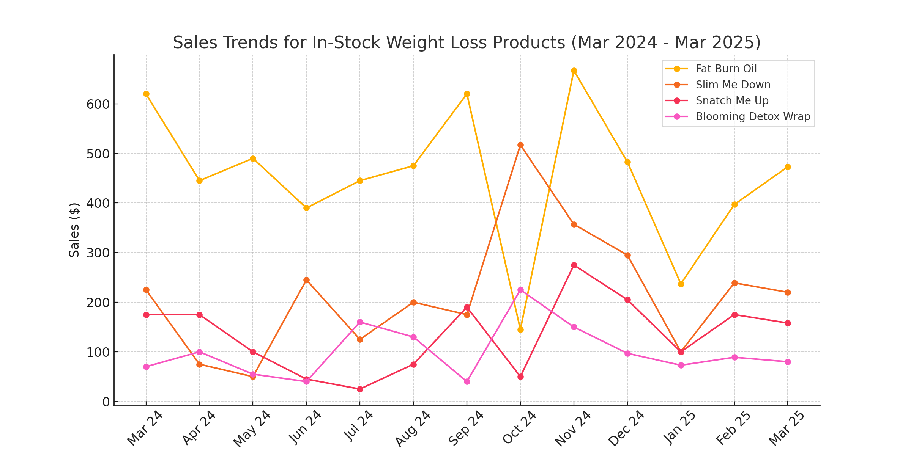

1. Executive Summary
This report analyzes the sales trends of Blooming Body’s in-stock weight loss products over the past year. The goal is to identify performance patterns, highlight areas of growth or decline, and recommend strategies to improve revenue.
2. Sales Overview (March 2024 - March 2025)
The following products were analyzed:
- Fat Burn Oil - 1,715 total units sold, $5,095.56 total revenue
- Slim Me Down - 980 total units sold, $2,113.44 total revenue
- Snatch Me Up - 690 total units sold, $1,442.76 total revenue
- Blooming Detox Wrap - 850 total units sold, $1,084.97 total revenue
Sales Data Table
| Month |
Fat Burn Oil |
Slim Me Down |
Snatch Me Up |
Blooming Detox Wrap |
| March 2024 | 620 | 225 | 175 | 70 |
| April 2024 | 445 | 75 | 175 | 100 |
| May 2024 | 490 | 50 | 100 | 55 |
| June 2024 | 390 | 245 | 45 | 40 |
| July 2024 | 445 | 125 | 25 | 160 |
| August 2024 | 475 | 200 | 75 | 130 |
| September 2024 | 620 | 175 | 190 | 40 |
| October 2024 | 145 | 517 | 50 | 225 |
| November 2024 | 667 | 357 | 275 | 150 |
| December 2024 | 483 | 295 | 205 | 97 |
| January 2025 | 237 | 100 | 100 | 73 |
| February 2025 | 397 | 239 | 175 | 89 |
| March 2025 | 473 | 220 | 158 | 80 |
3. Sales Trend Analysis

4. Potential Causes of Sales Fluctuations
- Marketing & Promotions: Sales spikes may have resulted from email campaigns, discounts, or social media visibility.
- Seasonality: Weight loss products may trend higher before summer or after holidays.
- Customer Preferences: If marketing efforts focused more on weight gain, weight loss products may not have been prioritized.
5. Recommendations for Sales Improvement
1. Increase Visibility Through Retargeting
- Run email campaigns and social media ads targeting past buyers of weight loss products.
- Implement post-purchase upsells to encourage repeat purchases.
2. Optimize Seasonal Promotions
- Plan a pre-summer push (April - June) when weight loss products may have higher demand.
- Use special bundles featuring Fat Burn Oil + Detox Wrap for added value.
3. Strengthen Social Proof
- Add more customer reviews & testimonials to build trust.
- Use before-and-after photos in marketing to boost credibility.
6. Next Steps
- ✅ Implement targeted marketing for Fat Burn Oil & Detox Wrap in upcoming campaigns.
- ✅ Revive sales for Slim Me Down & Snatch Me Up by testing new promotions.
- ✅ Track future monthly performance to measure improvements.
This report provides actionable insights to maximize revenue from in-stock weight loss products. Further data analysis can refine these strategies for better results.
Prepared by: Adolf de Guzman
Date: March 18, 2025